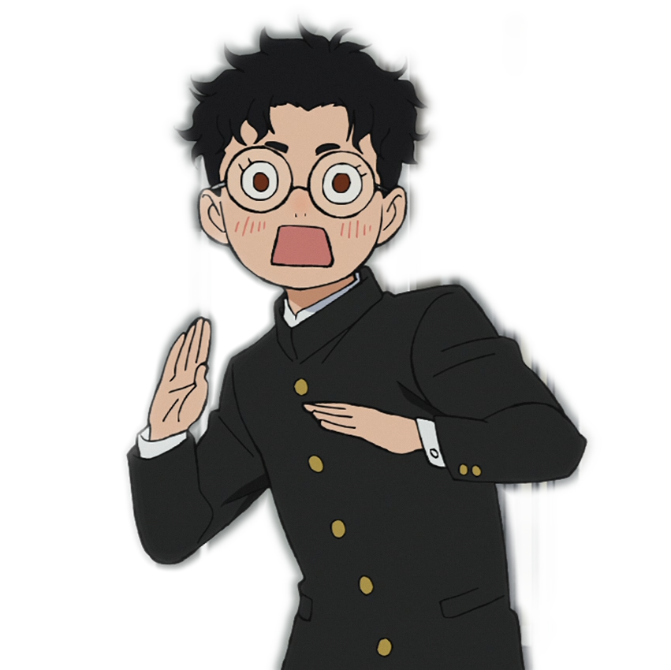
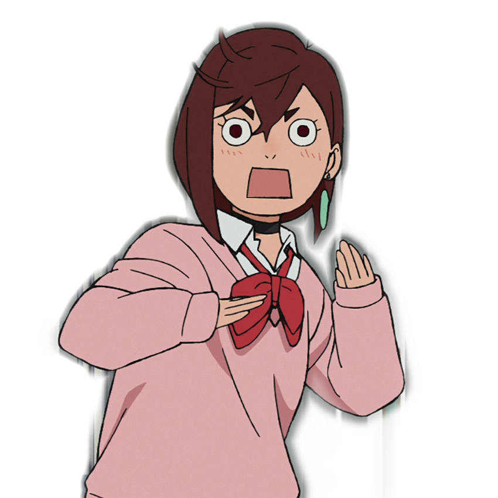

About
Dandadan (ダンダダン), also written as Dan Da Dan, is a Japanese manga series written and illustrated by Yukinobu Tatsu. It has been serialized in Shueisha's Shōnen Jump+ app and website since April 2021, with its chapters collected in 20 tankōbon volumes as of July 2025. The series follows two teenagers with supernatural powers fighting yōkai and aliens with help from multiple allies.
Characters
Takakura Ken (Okarun)
Okarun (real name Ken Takakura) is a shy, nerdy high schooler obsessed with the supernatural. Nicknamed by his crush Momo and her friends, he gains demonic powers after being possessed by the Turbo Granny, granting him super speed and a smooth-talking alter ego. Often bullied, he slowly finds confidence and friendship—especially with Momo, whom he eventually falls in love with. His bizarre journey frequently centers around the loss and recovery of his testicles, making for a wild mix of comedy, action, and heartfelt growth.
Ayase Momo
Momo Ayase is a bold and spirited gyaru high schooler who believes in ghosts thanks to her grandmother Seiko’s influence—though their bond was strained after Momo rejected the supernatural to avoid bullying. After being abducted by aliens, Momo awakens powerful psychokinetic abilities, using giant spectral hands to manipulate auras. Despite clashing with the nerdy Okarun at first, their shared battles bring them closer, and she grows to deeply care for him. With a secret crush on the actor Ken Takakura (awkwardly mirrored in Okarun’s name), Momo fights to help recover his stolen testicles—hoping to heal both him and her own family ties along the way.